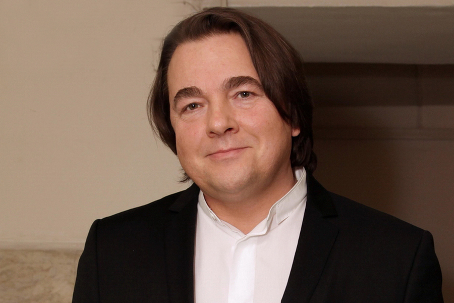

Генеральный директор Первого канала.
Архитектор кремлёвского телевидения с 1995 года.

6 февраля 1961 года. Отец — известный советский биолог Лев Эрнст, академик. Окончил биологический факультет МГУ — биолог по образованию, но выбрал телевидение. Это определит судьбу страны больше, чем любая наука.
Приходит на Центральное телевидение СССР в конце перестройки. Работает режиссёром и продюсером. Снимает рекламу и клипы — именно он стоит за культовыми роликами 90-х. Телевидение эпохи гласности ещё не знает, чем станет через десять лет.
В 34 года становится гендиректором ОРТ — в будущем Первого канала. Самое молодое назначение такого масштаба в истории российского телевидения. Ельцин и Березовский делают ставку на молодого профессионала. Эрнст начинает превращать канал в инструмент государственной политики — сначала медленно, затем стремительно.
Первый канал под руководством Эрнста активно поддерживает избирательную кампанию Владимира Путина. Медийная машина работает в полную силу: образ «сильного лидера» формируется в прайм-тайм. Эрнст получает личный доступ к будущему президенту. Факт
Под руководством Эрнста Первый канал превращается в главный инструмент государственной пропаганды. Независимые журналисты постепенно вытесняются. Редакционная политика согласовывается с Кремлём. Высокое качество производства — сериалы, шоу, новости — маскирует политическое содержание. Эрнст понимает: лучшая пропаганда та, которую смотрят с удовольствием.
Первый канал транслирует репортаж о якобы распятом украинскими националистами мальчике в Славянске. История оказывается полностью выдуманной, однако успевает облететь всю Россию. Под руководством Эрнста канал производит десятки подобных историй, формируя образ врага. Факт
Эрнст выступает главным режиссёром церемонии открытия зимних Олимпийских игр в Сочи. Грандиозное зрелище получает восторженные отзывы мировых СМИ. Путин лично благодарит Эрнста. Это демонстрирует двойственность фигуры: блестящий продюсер — и главный пропагандист страны.
После 24 февраля Первый канал становится главным источником военной пропаганды внутри России. Ежедневные ток-шоу с угрозами в адрес Запада, «денацификация», заниженные потери. ЕС и Великобритания вводят персональные санкции против Эрнста как против человека, несущего прямую ответственность за дезинформационную кампанию. Факт
Эрнст руководит Первым каналом уже три десятилетия — беспрецедентный срок. За это время он пережил трёх президентов (Ельцин, Путин, Медведев — и снова Путин), несколько войн, сотни отставок и назначений. Первый канал остаётся самым смотримым каналом страны с аудиторией более 35 миллионов человек в день. Интерпр. Эрнст — не пешка системы. Он один из её архитекторов.
Эрнст крайне редко даёт интервью и почти не появляется в публичном пространстве. Когда говорит — говорит осторожно. Но молчание само по себе красноречиво.
Под Эрнстом Первый канал производит технически безупречный контент: голливудский уровень монтажа, профессиональная картинка, дорогие декорации. Зритель доверяет красивому. Качество производства маскирует качество информации.
Сериалы, юмор, ток-шоу — Эрнст понял раньше других: пропаганду надо подавать как развлечение. «КВН», «Голос», «Поле чудес» — и между ними новости с Украины. Зритель приходит за шоу, остаётся с идеологией.
Эрнст — один из немногих медиаменеджеров с прямым доступом к президенту. Это даёт ему возможность предугадывать курс раньше официальных заявлений и встраивать нужные нарративы заблаговременно, не дожидаясь команды сверху.
В отличие от Киселёва или Симоньян, Эрнст не появляется в кадре. Он за камерой — неизвестный широкой публике архитектор. Это делает его сложнее для критики: пропаганда есть, а персонального лица у неё нет.
«Эрнст — самый опасный человек в российских СМИ, потому что он умный. Он знает, что делает пропаганду, и делает её хорошо. Это хуже, чем делать её по глупости.»
«Первый канал под руководством Эрнста является ключевым инструментом дезинформации, направленной против Украины и западных союзников. Именно поэтому он включён в санкционный список.»
«Когда смотришь церемонию в Сочи, думаешь: как этот человек может делать такое красивое — и одновременно "распятого мальчика"? Ответ: потому что для него это одна профессия.»
Все утверждения основаны на открытых публичных источниках. Факт — прямые первичные источники. Интерпр. — авторская интерпретация документальных событий.